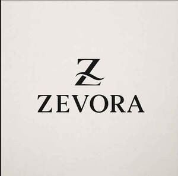

Trade Mark Journal No.2025/031 1 August 2025
UK00004235763 18 July 2025 (9,14,25)

- Class 9
- Smart watches; Smart bracelets; Smart phones; Smart glasses; Wearable smart phones; Displays for smart phones; Smart rings; Smart meters; Headphones for smart phones; Smart locks; Smart cards; Wearable digital electronic communication devices; Wearable smartphones; Digital sensors; Digital sensory devices; Portable digital electronic scales; Wearable computers; Fashion sunglasses; Fashion eyeglasses; Cases for eyeglasses and sunglasses; Software related to handheld digital electronic devices; Electronic tags for goods; Fashion spectacles; Cases for spectacles and sunglasses; Sunglasses; Chargers for electronic cigarettes; Wearable communications devices in the form of wristwatches; Electronic keys for automobiles; Chargers for electronic smokers' articles; Electronic communication equipment and instruments; Electronic tags; USB chargers for electronic cigarettes; Optical electronic components; Cases for sunglasses; Electronic components; Chains for spectacles and sunglasses; Electronic magazines.
- Class 14
- Necklaces; Necklaces [jewelry]; Necklaces [jewellery]; Choker necklaces; Bracelets [jewelry]; Silver-plated necklaces; Pendants [jewelry]; Necklaces [jewellery, jewelry (Am.)]; Bracelets [jewellery]; Silver necklaces; Bib necklaces; Bracelets; Bangle bracelets; Bead bracelets; Silver-plated bracelets; Bracelets for watches; Ankle bracelets; Silver bracelets; Friendship bracelets; Gold bracelets; Identification bracelets [jewelry]; Signet rings; Rings [jewelry]; Rings being jewellery; Rings [jewellery]; Silver-plated rings; Finger rings; Engagement rings; Gold-plated rings; Wedding rings; Silver rings; Earrings; Jewelry clips for adapting pierced earrings to clip-on earrings; Silver-plated earrings; Hoop earrings; Pierced earrings; Gold-plated earrings; Silver earrings; Gold earrings; Clip earrings; Drop earrings; Gold plated bracelets; Rings [jewellery] made of non-precious metal; Rings [jewellery] made of precious metal; Gold plated brooches [jewellery]; Watches made of plated gold; Gold plated earrings; Jewellery made from silver; Jewellery made of plated precious metals; Gold plated rings; Gold necklaces; Jewellery made from gold; Jewellery chain of precious metal for bracelets; Jewellery chain of precious metal for necklaces; Jewellery made of bronze; Identification bracelets of precious metal [jewelry].
- Class 25
- T-shirts; Tee-shirts; Shirts; Short-sleeved T-shirts; Printed t-shirts; Sweatshirts; Long-sleeved shirts; Short-sleeved shirts; Turtleneck shirts; Short-sleeve shirts; Thobes; Hijabs; Chadors; Headscarfs; Burkas; Shawls and headscarves; Headscarves; Kaftans; Veils [clothing]; Niqabs; Dresses; Bridesmaid dresses; Pinafore dresses; Wedding dresses; Maternity dresses; Cocktail dresses; Collars for dresses; Jumper dresses; Leather dresses; Dresses for evening wear; Dress shirts; Evening dresses; Nurse dresses; Tennis dresses; Gowns; Casual shirts; Caps; Casual jackets; Caps [headwear]; Caps being headwear; Casual wear; Casual clothing; Casual trousers; Sports caps and hats; Baseball caps and hats; Baseball caps; Casual footwear; Caps with visors; Sports caps; Shoes for casual wear; Cycling caps; Swimming caps [bathing caps]; Bathing caps; Knitted caps; Golf caps.
Sadaqat Liaqat Khan
Representative: Alexander Elizabeth